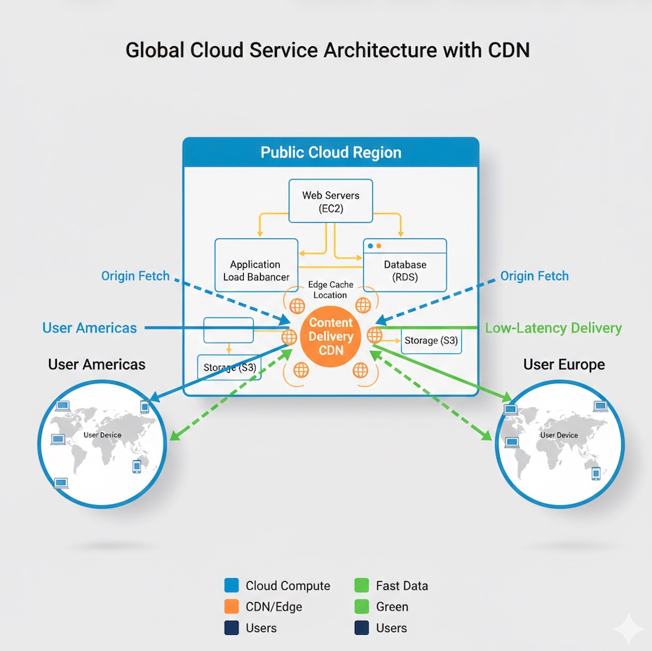

Career

I am Darrell Lee, a veteran of the technology industry with nearly 30 years of experience. My career path reflects a deep commitment to technical growth, starting as a machine operator before advancing to a machine technician and eventually spending a decade as a developer. During this ten-year period, I specialized in C# and web development. While working at a large tech company, I earned my Bachelor of Science in Computer and Information Systems with a minor in Mathematics from Oregon State University.
Following five years as a systems engineer, I transitioned into leadership. I managed GTP Enterprise Storage and Data Protection for approximately three years, where I enhanced team performance and developed disaster recovery plans. Today, I serve as a Senior Manager II in M&A Enterprise Engineering. In this role, I manage all infrastructure for new acquisitions and divestitures, leading the complex integrations that drive the enterprise forward.